OTIUM — практика нарочитого досуга. В античном смысле otium — не побег от работы, а время, когда внимание возвращается к памяти, пейзажу и мысли — без прикладного дедлайна.
Мы выстраиваем маршруты для неспешного присутствия, а не для чек-листа достопримечательностей: важно быть в месте, а не «потреблять» виды.
OTIUM — не туроператор. Это приглашение пройтись, остановиться и оставить маршрут незавершённым, если свет на фасаде заслуживает ещё минуты.
Исторические и справочные гербы
Prague
Путеводитель. Объектов в этом выпуске: 37.
Историческая справка
Прага — столица Чехии, политический и культурный центр страны на реке Влтаве.
Княжеский и королевский город Священной Римской империи, столица Чехословакии и Евросоюза на перекрёстке Германии и Славии. Градчаны, Карлов мост и барокко контрастируют с модерном и современной архитектурой.
Вторая мировая война и оккупация, 1968 и «бархатная» революция 1989 года определили память о свободе. Вступление в ЕС и НАТО закрепило западную ориентацию; Прага сочетает туризм, автопром и сервисы как столица Средней Европы.
Маршруты
Один день
Компактный маршрут по главным точкам путеводителя с минимальным возвратом назад пешком.
Сидя высоко над рекой Влтава на живописном холме, базилика Святого Петра и Святого Павла в Вышеграде является одной из самых знаковых достопримечательностей Праги. Ее высокие шпили и возвышающиеся башни доминируют над горизонтом города, предлагая посетителям захватывающий вид на столицу внизу. Построенный из местного песчаника и гранита. Достопримечательностью являются близнецовые башни высотой более 70 метров. Содержит множество витражей, изображающих библейские сцены. Расположенный внутри древнего крепостного комплекса Вышеград. Дизайн, вдохновленный средневековыми европейскими церквями.
Построенная в период с 1891 по 1896 год, базилика была спроектирована чешским архитектором Антонином Линхартом, чтобы заменить ранее существовавшую церковь, разрушенную во время Второй мировой войны. Структура сочетает элементы неоготического и романского стилей, демонстрируя сложные резьбы и elaborate decorations, типичные для этих периодов. Этот величественный собор служит как духовным центром для местных жителей, так и туристов, предлагая при этом потрясающие панорамные виды на исторические районы Праги.
Карлов мост
Период: 1357
Пересекая реку Влтава и соединяя Старый город Праги с районом Замка, Карлов мост является одной из самых знаковых достопримечательностей Европы. Построенный в позднем Средневековье, он изначально назывался Каменным мостом. Мост был освящен 9 июля 1402 года. В начале 20 века он подвергся значительной реставрации после повреждений, полученных в результате бомбардировок Второй мировой войны. Карлов мост вдохновил бесчисленное количество художников, писателей и фотографов благодаря своей живописной красоте и историческому значению. Сегодня это по-прежнему популярное место как для местных жителей, так и для туристов, предлагающее только пешеходный доступ. В 1995 году Карлов мост был включен в список Всемирного наследия ЮНЕСКО.
Построенный между 1357 и 1402 годами во время правления короля Карла IV, Карлов мост заменил более ранний деревянный мост, который неоднократно разрушался наводнениями. Задуман как соединение исторических районов Праги, он стал важным транспортным маршрутом и символом процветания города. Мост украшен 30 барочными статуями, каждая из которых представляет святых и библейских персонажей, добавленных на протяжении нескольких столетий. Посещение Карлова моста позволяет путешественникам ощутить богатое архитектурное наследие Праги и насладиться панорамными видами на берегах реки города.
Церковь Непорочного Зачатия Пресвятой Девы Марии
Период: 1370–1489
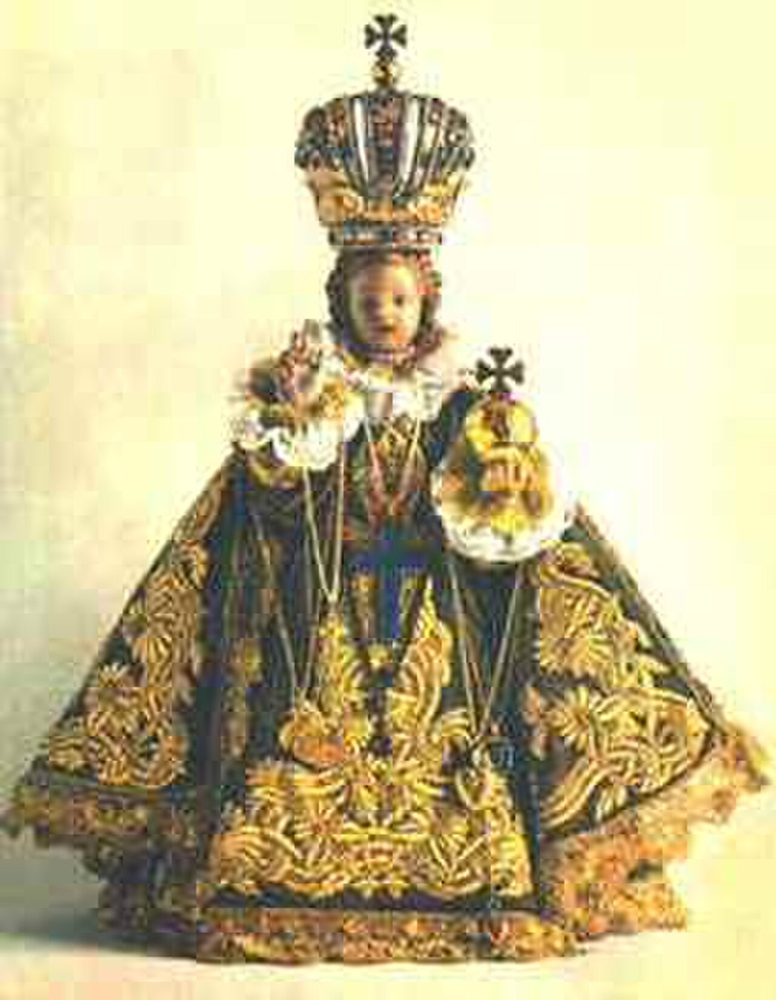
Церковь Девы Марии Виктории, также известная как Церковь Тына, является выдающимся памятником в Старом городе Праги. Ее впечатляющая готическая архитектура и три башни делают ее одной из самых знаковых строений города. Он включает три высокие башни, которые доминируют над горизонтом Староместской площади. Интерьер украшен сложными резьбами и картинами, изображающими библейские сцены. Его алтарь содержит ценные золотые и серебряные артефакты, относящиеся к 15 веку. Церковь претерпела несколько реставраций на протяжении веков, но сохраняет большую часть своего оригинального средневекового характера. Рядом с церковью находятся руины часовни Святого Иакова, которые предоставляют дополнительные сведения о её истории.
Церковь, построенная в период с 1370 по 1489 год, была возведена во время правления короля Карла IV. Изначально она должна была стать частью более крупного комплекса, однако строительство было прервано Гуситскими войнами. Позже церковь стала символом религиозной победы после битвы на Белой горе в 1620 году, откуда и произошло её название «Наша Госпожа Победоносная». Посетители приходят сюда ради его потрясающего готического дизайна и исторического значения, особенно впечатляющего алтаря и витражей.
Танцующий дом
Период: 1992–1996
Танцующий дом (чеш. Tančící dům), также известный как Фред и Джинджер благодаря своему плавному силуэту, является модернистской достопримечательностью, спроектированной Фрэнком Гери и чешским архитектором Пьотром Эштетриком. Завершённый в 1996 году, он выделяется на фоне традиционной архитектуры Праги. Спроектировано канадско-американским архитектором Фрэнком Гери и чешским архитектором Пьетром Эштетриком. Расположен на улице Рейсек рядом с рекой Влтава. Символизирует слияние западно- и восточноевропейской эстетики. Вдохновленный танцевальным партнерством Фреда Астера и Джинджер Роджерс. Признано одним из самых значительных современных сооружений Европы.
Построенный в период с 1992 по 1996 год, Танцующий дом был возведен в эпоху политических перемен в Чехословакии после падения коммунизма. Уникальный дизайн здания отражает сотрудничество двух архитекторов: Гери внес свой авангардный стиль, в то время как Эштетрик интегрировал местные архитектурные традиции. Его характерная форма стала знаковым символом города. Посетители приходят, чтобы увидеть инновационную архитектуру и игривую, динамичную форму, которая резко контрастирует с окружающими историческими зданиями.
Кампа и Карлов мост
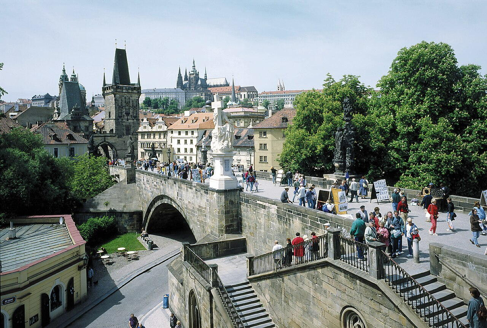
Кампа — это живописный парк на берегу реки Влтава, предлагающий потрясающие виды на исторические достопримечательности Праги, включая Карлов мост. Это мирный оазис, наполненный скульптурами, садами и пешеходными дорожками, который предоставляет спокойное убежище от суеты городской жизни. Расположенный на берегах реки Влтава, Кампа предлагает захватывающие виды на знаковые достопримечательности Праги. Парк включает в себя множество скульптурных инсталляций, созданных современными художниками. Это популярное место для местных жителей и туристов, где можно отдохнуть и поразмышлять на фоне природы. Парк Кампа соединен с Карловым мостом несколькими пешеходными мостами, что делает его легко доступным из различных частей города. В этом парке регулярно проводятся культурные мероприятия, такие как музыкальные фестивали и художественные ярмарки.
Изначально болотистая местность, использовавшаяся для рыболовства и сельского хозяйства, Кампа была преобразована в парк в конце 19 века архитектором Йозефом Зитеком. Это место стало известным как сборище художников и интеллектуалов в начале 20 века. Сегодня оно остается ярким культурным центром, известным своими открытыми художественными выставками и очаровательными кафе. Посетите Кампу, чтобы насладиться непревзойденными панорамными видами на Карлов мост и Старый город, погружаясь в расслабляющую атмосферу этого спокойного зеленого пространства.
Дворец Кинских (Площадь Старого города)
Сидя величественно на краю Староместской площади, дворец Кинских является свидетельством барочной архитектуры и богатого культурного наследия Праги. Построенный во время правления императора Карла VI. Занесен в список Национальных культурных памятников с 1962 года. Ранее принадлежавший видным чешским аристократам. Знаменит своими сложными штукатурными работами и изысканными украшениями. На протяжении своей истории здесь проводились многочисленные королевские и дипломатические собрания.
Построенный в начале 18 века архитектором Яном Блахославом для графа Франтишека Кинского, дворец на протяжении многих лет служил как резиденцией, так и местом проведения различных официальных церемоний. Его величественный входной холл и роскошные интерьеры отражают пышность и элегантность, характерные для своей эпохи. Обязательный к посещению для всех, кто интересуется исследованием архитектурных сокровищ Праги и хочет firsthand ощутить историческое величие города.
Стенка Леннона
Период: 1988
Стена Леннона — это яркое и знаковое место уличного искусства, расположенное на Староместской площади в Праге. Она стала одной из самых популярных достопримечательностей города, привлекая посетителей со всего мира. Это одно из самых известных мест уличного искусства в Европе. Стена служит данью миру и свободе. Художники из разных стран вносят свой вклад в его развивающийся дизайн. Он привлекает тысячи туристов ежегодно. Его первоначальная цель заключалась в выражении протеста против авторитарных режимов.
Изначально расписанная местным художником Давидом Черны в 1988 году, стена была названа в честь песни Джона Леннона «Give Peace a Chance». Со временем она стала символом свободы и сопротивления в коммунистическую эпоху Чехословакии. Сегодня стена продолжает эволюционировать, поскольку художники со всего мира добавляют свои уникальные творения, превращая её в динамичное и постоянно меняющееся полотно. Посещение Стены Леннона позволяет путешественникам ощутить слияние искусства, истории и культуры в Праге.
Летний метроном
Период: 2006
Сидя на вершине парка Летна, Летний метроном является современным памятником, который стал одной из самых знаковых конструкций Праги с момента его постройки в 2006 году. Спроектированный чешским архитектором Яном Каплицким, он является свидетельством современного архитектурного и инженерного искусства. Он расположен в парке Летна, предлагая захватывающие виды на центр города. Его уникальный дизайн включает светодиоды, которые освещаются ночью, улучшая видимость издалека. Здание вмещает ресторан и смотровую площадку, предлагая посетителям живописные виды. Эффект колебаний создает ощущение движения даже в статичном положении, что добавляет динамичности его привлекательности. Он был признан международным сообществом за свою архитектурную инновационность.
Завершенный в 2006 году, Метроном на Летне был построен на месте бывших Летenských Ледовых Арен. Он представляет собой слияние искусства и технологии, демонстрируя инновационные принципы дизайна и материалы. Структура оснащена уникальным колебательным механизмом, вдохновленным движением метрономов, символизирующим ритм и гармонию. Метроном на Летной предлагает панорамные виды на Прагу и является популярной встречной точкой как для местных жителей, так и для туристов.
Смотровая площадка парка Летна
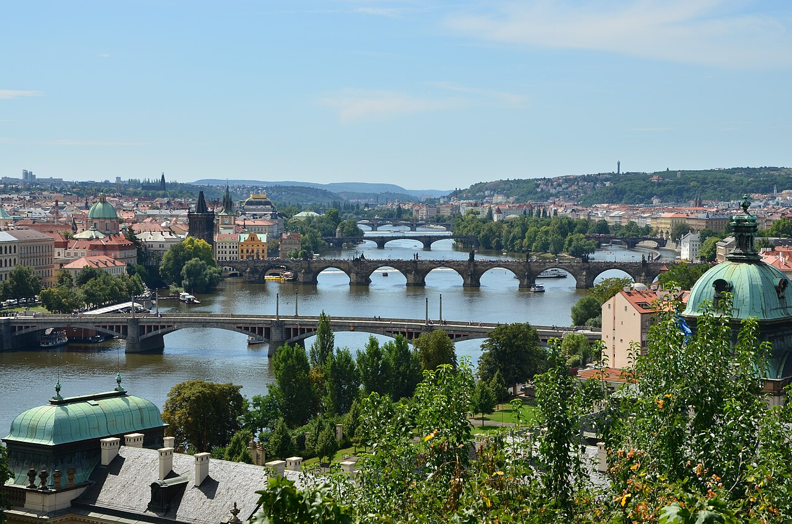
Расположенный высоко над шумными улицами Праги, Парк Летна предлагает панорамный вид на город, включая знаковый Карлов мост и величественные шпили Староместской ратуши. В ясные дни посетители могут даже увидеть далекие горы на западе. Он расположен на холме с видом на долину реки Влтава. Парк Летна проводит различные культурные мероприятия в течение года, включая кинопоказы и уличные выступления. Посетители также могут наслаждаться неспешными прогулками по извивающимся тропинкам среди зелени парка. Парк украшен несколькими скульптурами и памятниками, посвящёнными историческим личностям и значимым моментам в чешской истории.
Изначально разработанный как военный учебный полигон в конце 19 века, Парк Летна с тех пор стал одной из самых популярных рекреационных зон Праги. Он прославился проведением масштабных концертов и фестивалей, таких как ежегодный фестиваль Rockwave, который привлекает тысячи любителей музыки каждый год. Парк славится своими захватывающими видами и является идеальным местом для создания живописных фотографий городского пейзажа.
Зеркальная капелла (Клементинум)
Период: 1694–1703
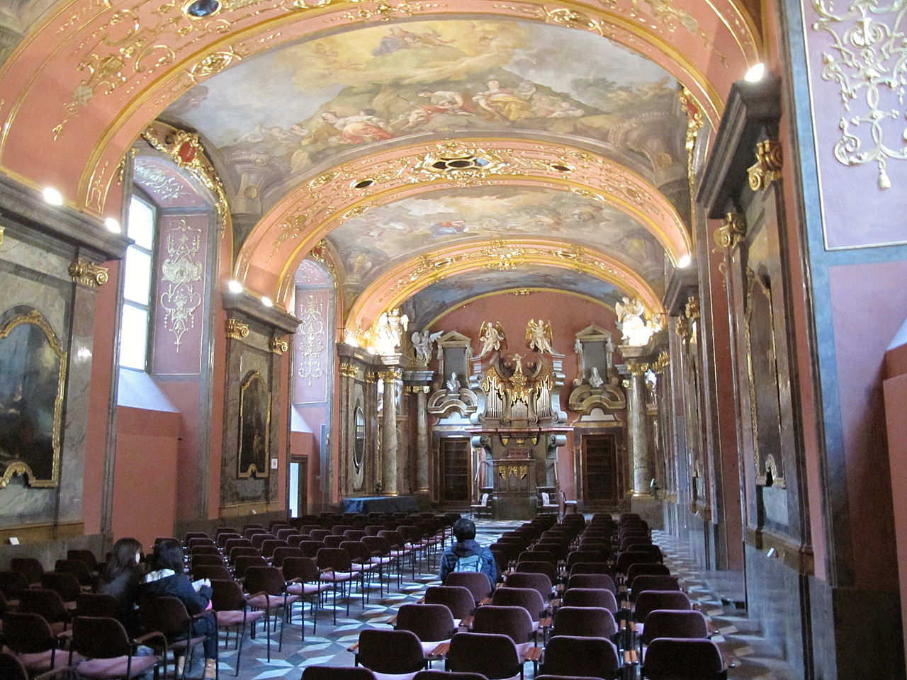
Зеркальная капелла, часть комплекса Клементинум, является потрясающим примером барочной архитектуры и искусства. Она была построена в конце 17 века как капелла в бывшем иезуитском колледже. Он расположен в историческом здании Клементинума, в котором находится Национальная библиотека Чехии. Его потолок украшен сложными фресками, написанными мастерами искусства того времени. Зеркала часовни отражают свет, создавая ощущение глубины и пространства. Небольшой орган, расположенный рядом с алтарем, усиливает духовную атмосферу во время богослужений.
Построенная между 1694 и 1703 годами итальянским архитектором Джованни Доменико Орси, Зеркальная капелла изначально служила местом для религиозных служб и образования. Ее стены украшены сложными золотыми декорациями, зеркалами и картинами, изображающими святых и библейские сцены. Посетители приходят полюбоваться его изысканным интерьером, который сочетает в себе барочные элементы с отражающими поверхностями, создающими ослепительный эффект.
Муниципальный дом
Период: 1911
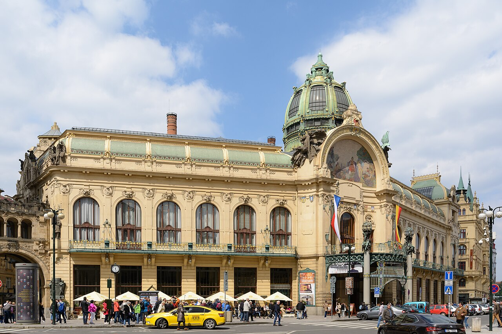
Завершенное в 1911 году, Муниципальный дом является величественным памятником стиля ар-нуво, расположенным на Вацлавской площади в Праге. Спроектированное архитектором Йозефом Фантой и украшенное сложными мозаиками, фресками и скульптурами, оно изначально задумывалось как культурный центр для среднего класса города. Он включает в себя величественный зал с купольным потолком и центральным фонтаном. Здание вмещает кафе, ресторан и концертный зал. Его фасад украшен сложными керамическими плитками, изображающими сцены из чешского фольклора. Во время Второй мировой войны он выжил после бомбардировок благодаря своему стратегическому расположению вдали от основных целей. Сегодня он остается одним из самых знаковых символов Праги.
Построенный в эпоху Чешского национального возрождения, Муниципальный дом служил местом для концертов, выставок и общественных мероприятий. Его роскошный интерьер отличается изысканными деталями, включая люстры, мраморные полы и витражные окна, демонстрируя яркое творчество дизайна начала 20-го века. Посетители приезжают, чтобы насладиться уникальным архитектурным стилем и ощутить историческую атмосферу культурного сердца Праги.
Национальный музей
Период: 1818
Национальный музей Чехии является одним из крупнейших и самых значимых учреждений Европы, посвященных науке, искусству и культуре. Основанный в 1818 году как королевский музей, он стал обширной коллекцией, демонстрирующей чешское наследие в различных областях. Он содержит более 14 миллионов предметов в своих обширных коллекциях. Само здание является примечательным примером неоренессансной архитектуры. Экспонаты варьируются от древних ископаемых до современного искусства и исторических артефактов. Одним из его главных достопримечательностей является знаменитый Зал динозавров с моделями в натуральную величину. Регулярные временные выставки представляют передовые исследования и современное искусство.
Основанный в 1818 году императором Францем I, Национальный музей изначально назывался Королевским музеем естественной истории и искусств. Со временем он расширил свои коллекции, включив антропологию, археологию, геологию, зоологию и изобразительное искусство. Сегодня в нем хранится более 14 миллионов артефактов, что делает его одним из крупнейших культурных хранилищ страны. Посетители приезжают сюда ради обширных экспозиций, охватывающих естественные науки, искусство, историю и антропологию, которые предоставляют глубокое понимание чешской культуры и наследия.
Национальный технический музей
Период: 1901
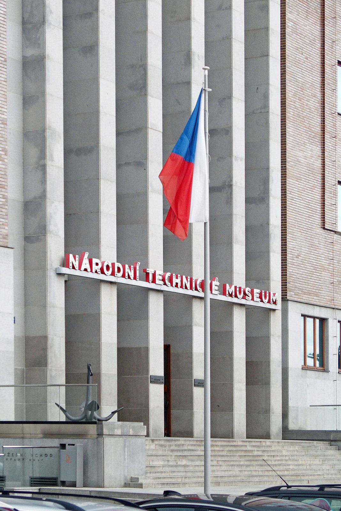
Национальный технический музей — это ведущий музей науки и техники, демонстрирующий чешские инновации и инженерные чудеса. Он гордится одной из крупнейших коллекций винтажных автомобилей и самолетов в Европе. Экспонаты включают интерактивные дисплеи, которые позволяют посетителям на собственном опыте узнать, как работают машины. Музей регулярно проводит временные выставки по новым технологиям, таким как искусственный интеллект и возобновляемая энергия. Расположенный в историческом парке Летна, он предлагает панорамные виды на Прагу с террасы на крыше. Его архитектурный стиль отражает влияние ар-нуво с современными акцентами.
Основанный в 1901 году, музей с момента своего создания стал центром технологического образования и исследований. Он хранит более 400,000 экспонатов, охватывающих века чешских технических достижений, включая ранние паровые машины, аэрокосмические модели и демонстрации робототехники. Посетители могут исследовать передовые технологии наряду с историческими артефактами, получая представление о чешском гении и инновациях.
Национальный театр
Период: 1883
Национальный театр в Праге — это грандиозный архитектурный шедевр, демонстрирующий чешскую культуру и искусство. Завершенный в 1883 году, он является одним из самых значительных оперных театров Европы. Он был основан под патронажем императора Франца Иосифа I Австро-Венгрии. Его интерьер украшен сложными декорациями и изысканными люстрами, вдохновленными итальянскими ренессансными дворцами. Театр проводит более 300 представлений ежегодно, привлекая зрителей со всего мира. Значимые произведения, исполненные здесь, включают 'Дон Жуана' Моцарта и 'Травиату' Верди. В 1992 году здание было внесено в список объектов Всемирного наследия ЮНЕСКО.
Построенный в конце 19 века, Национальный театр был спроектирован Йозефом Зитеком, чтобы воплотить культурные устремления чешской нации после десятилетий правления Габсбургов. Он открыл свои двери 4 мая 1883 года с представлениями, которые отмечали чешскую идентичность через музыку и драму. Неоренессансный стиль здания отражает как историческое влияние, так и современные инновации, что делает его символом чешней гордости и художественного самовыражения. Посещение Национального театра позволяет посетителям насладиться оперой, балетом и спектаклями мирового уровня, погружаясь в богатое культурное наследие Богемии.
2017 Hatvan
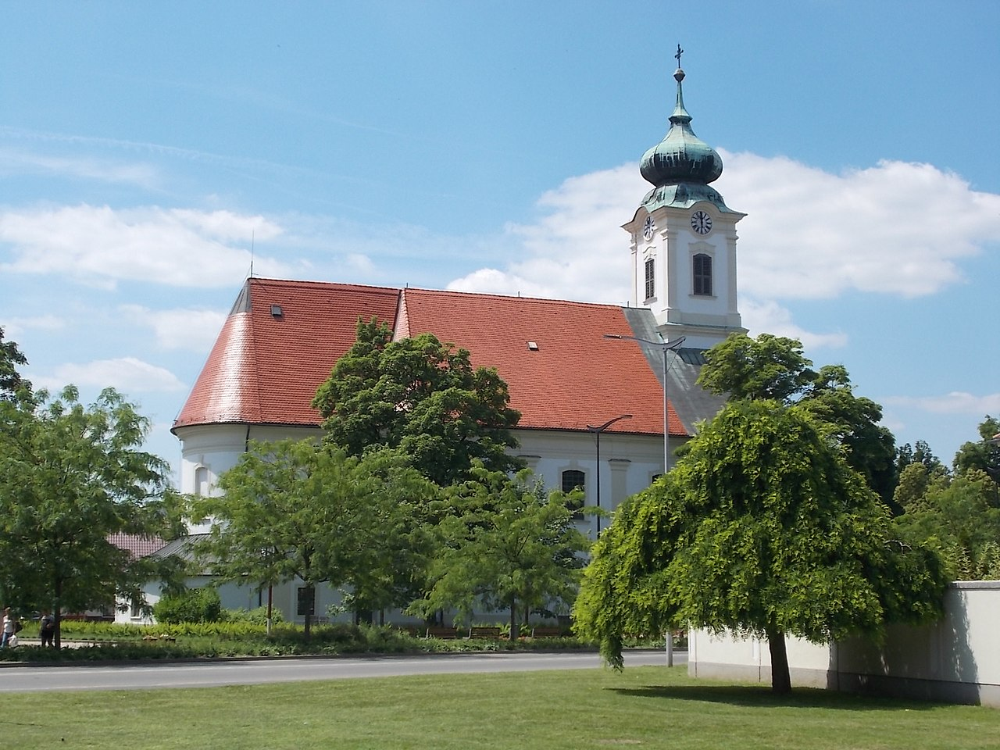
Nizwa 006 (30816611472)
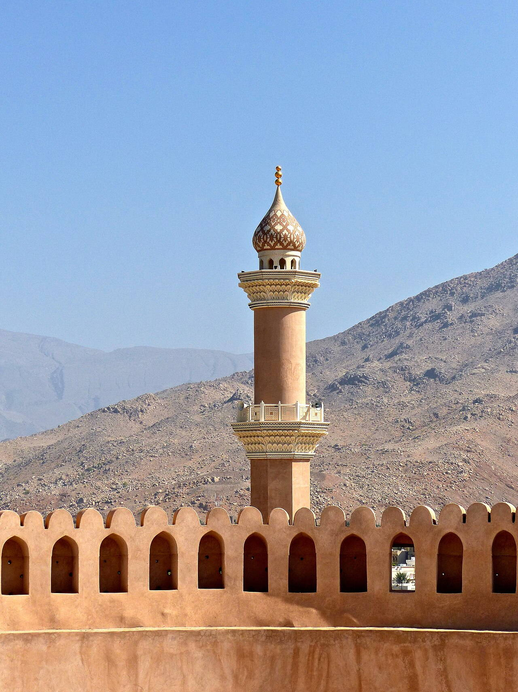
Нáплавка (Раšinovo nábřeží)
Период: 1907–1916
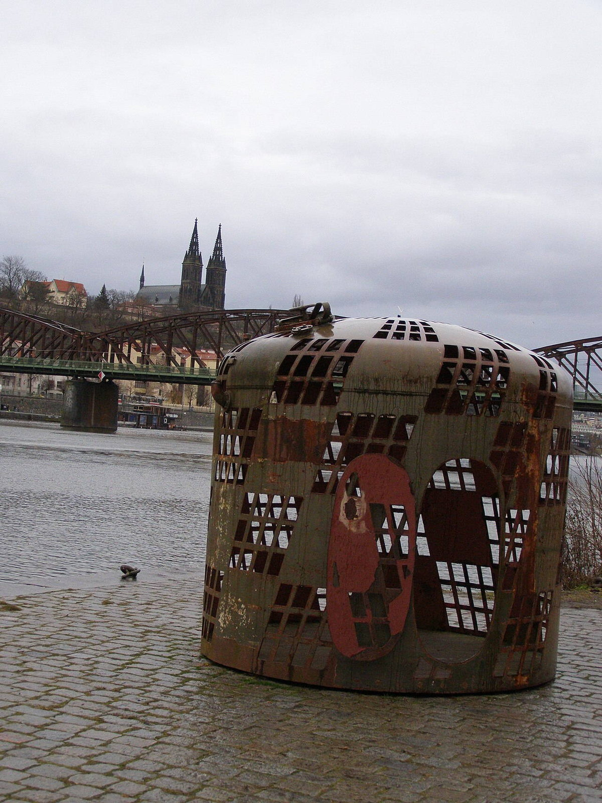
Нáплавка — это уникальная система защиты от наводнений и набережная вдоль реки Влтава в Праге. Она была построена в период с 1907 по 1916 год, чтобы защитить город от наводнений, а также стала популярной зоной отдыха. Построенное из железобетона и камня, сооружение протянулось более чем на 4 километра вдоль реки. Название 'Náplavka' переводится как 'переполнение' на английском, что отражает его назначение как механизма защиты от наводнений. В него входят несколько мостов, соединяющих разные части города, что облегчает исследование различных районов. Во время Второй мировой войны Неплавка служила стратегической оборонительной позицией благодаря своему возвышенному расположению и смотровым площадкам. Сегодня это по-прежнему любимое место как для местных жителей, так и для туристов, предлагающее панорамные виды и культурные мероприятия.
Построенная в начале 20 века, конструкция Неплавки сочетает в себе как функциональные меры по контролю наводнений, так и эстетические элементы. Спроектированная чешским архитектором Антонином Вихлом, она включает в себя элегантные арки и пешеходные дорожки, которые гармонично вписываются в природный ландшафт береговой линии реки. Обязательное место для посещения благодаря потрясающим видам на реку Влтава и Башню Староместского моста, а также его историческому значению как защитного барьера.
Старое еврейское кладбище
Период: 1439
Старое еврейское кладбище — это самое старое и знаменитое еврейское захоронение Праги, датируемое концом 15 века. Здесь находится более 12 000 надгробий, многие из которых имеют столетнюю историю. Он расположен рядом с Карловым мостом и Староместской площадью, что делает его легко доступным пешком. Здесь похоронены многие выдающиеся личности, включая раввина Лева, который, возможно, вдохновил легенду о Големе. Кладбище было объявлено объектом Всемирного наследия ЮНЕСКО в 1992 году. Из-за ограниченного пространства новые захоронения прекратились в начале 18 века. Погребальные слои поднимаются до девяти этажей в высоту.
Основанное около 1439 года, это кладбище служило последним пристанищем для поколений евреев, живущих в Праге. Из-за строгих правил использования земли захоронения были расположены слоями, что привело к уникальному «слоистому» виду, который делает его одним из самых необычных кладбищ Европы. Посещение Старого еврейского кладбища дает представление о истории и культуре еврейской общины Праги.
Старая ратуша
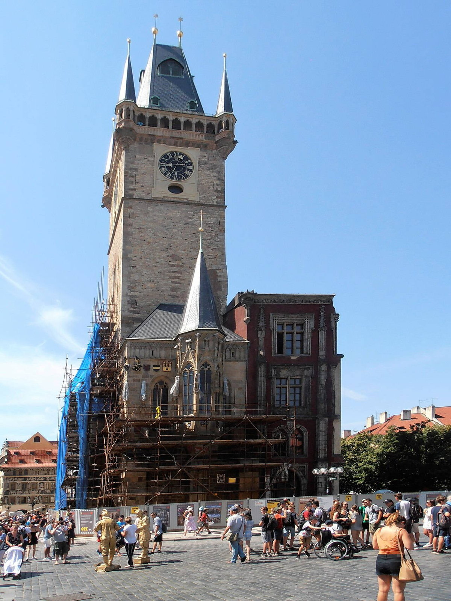
Старая ратуша — это величественная достопримечательность, доминирующая над историческим центром Праги, являясь одной из самых знаковых построек города с момента своего строительства в конце 14 века. В нем находятся два известных астрономических часов, каждый из которых имеет уникальные небесные дисплеи. Здание претерпело значительные renovations в начале 20 века, сохранив свою историческую целостность и одновременно внедрив современные элементы. Сегодня он служит музеем, демонстрирующим средневековые артефакты и исторические документы, связанные с управлением городом. Его башня предлагает панорамные виды на Староместскую площадь и окрестности. Зал изначально размещал муниципальные правительственные офисы и суды.
Построенная во время правления Карла IV около 1380 года, Старая ратуша на протяжении веков служила различным административным и судебным целям. Она также была домом для астрономических часов, которые стали известны своими сложными механизмами и небесными дисплеями. Архитектура зала отражает готические влияния с последующими ренессансными дополнениями, демонстрируя эволюцию архитектурных стилей в Праге. Посетители приходят сюда, чтобы полюбоваться потрясающим готическим фасадом, исследовать исторические залы заседаний и восхититься intricately decorated interior spaces.
Староместская площадь
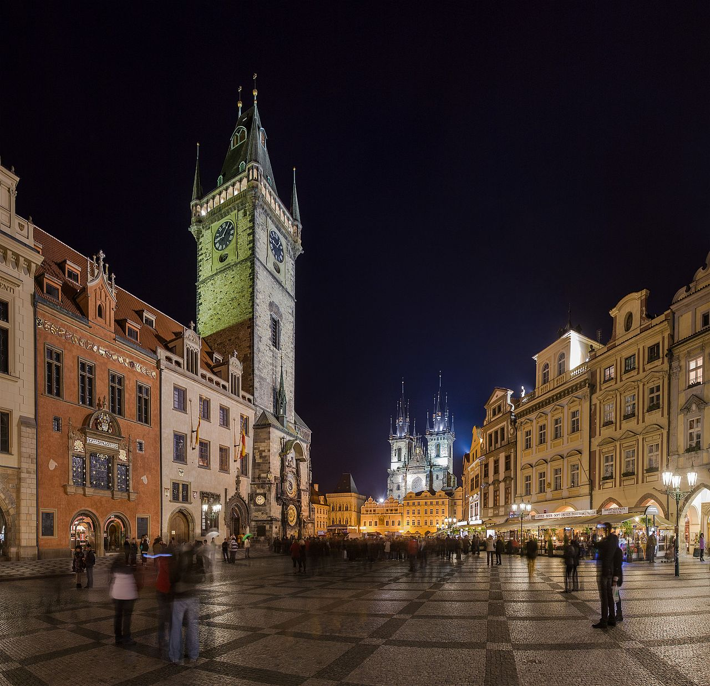
В сердце Старого города Праги находится его знаковая площадь, свидетельство веков архитектурного и культурного наследия. Улица с брусчаткой окружена средневековыми зданиями, каждое из которых рассказывает историю прошлых империй и королевских дворов. Площадь окружена готическими, ренессансными и барочными зданиями. Каждое лето здесь проходит знаменитый Пражский весенний фестиваль. Астрономические часы, установленные в 1410 году, являются одними из старейших действующих часов в Европе. Соседствующая с площадью церковь Тын была построена между 1380 и 1420 годами. Во время Второй мировой войны площадь служила местом сбора для движений сопротивления.
Основанная в начале XIV века королем Вацлавом II, Староместская площадь изначально была спроектирована как рынок для торговцев и ремесленников. Со временем она стала центром политических собраний и фестивалей, принимая значимые события, такие как коронации и религиозные процессии. Сегодня здесь расположены такие достопримечательности, как церковь Святого Николая и Астрономические часы, которые привлекают туристов со всего мира. Посетите Староместскую площадь, чтобы вблизи ощутить богатую историю Праги и восхитительную архитектуру.
Петřинская смотровая башня
Период: 1891
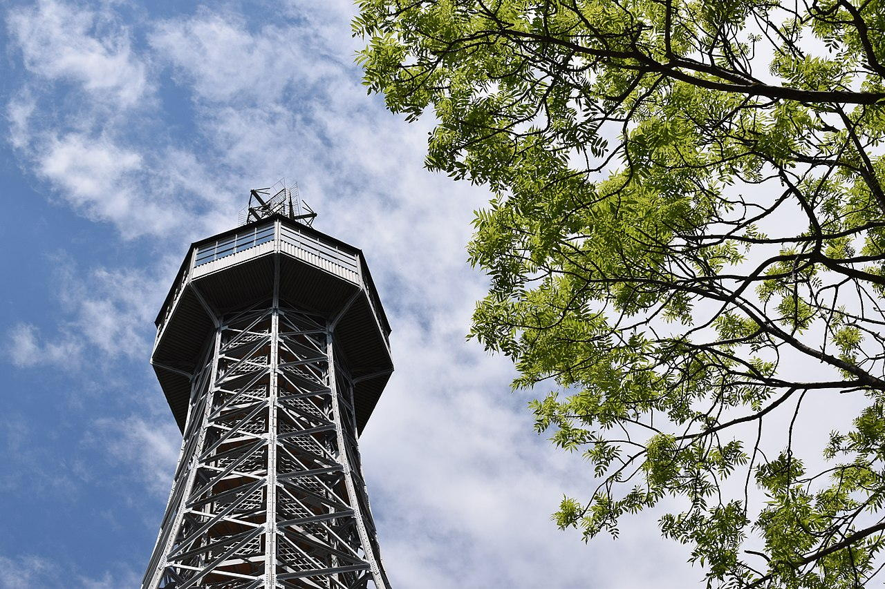
Высоко над шумными улицами Праги расположена Петршинская смотровая башня, предлагающая панорамный вид на достопримечательности города и мосты. Построенная в 1891 году в рамках Выставки декоративного искусства, она является свидетельством инженерного и дизайнерского мастерства конца 19 века. Башня высотой 60 метров, построенная в основном из железа и камня. Он предлагает смотровую площадку с видами, простирающимися на 20 километров вокруг города. Небольшой музей в башне демонстрирует исторические артефакты, связанные с Экспозицией. Ночью башня освещена, что делает её впечатляющим зрелищем на фоне вечернего горизонта. В 1945 году, во время Второй мировой войны, башня служила стратегической военной наблюдательной точкой.
Завершенная в 1891 году для Чешской выставки декоративных искусств, башня была спроектирована архитектором Йозефом Зитеком. Изначально предназначенная как временная конструкция, ее популярность привела к постоянной установке на холме Петршин. С тех пор она стала одним из самых знаковых символов Праги и популярной смотровой площадкой как для туристов, так и для местных жителей. Посетители приходят сюда, чтобы испытать волнение от взгляда на Староместскую площадь, Карлов мост и реку Влтава с высоты птичьего полета.
Пудровые ворота
Период: 1612–1614
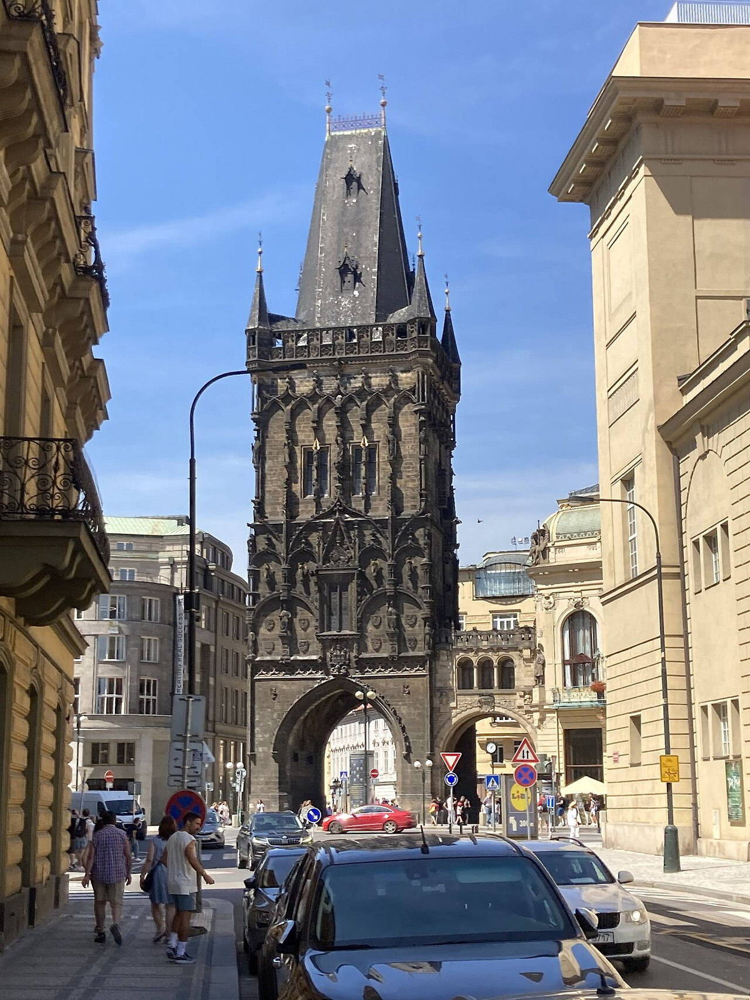
Пудровые ворота (Výstavušská brána), величественная достопримечательность Старого города Праги, являются одной из самых знаковых структур города. Изначально построенные во времена правления императора Рудольфа II, они служили оборонительным барьером и входной точкой для королевского замка. Построенные в 1612–1614 годах, ворота являются прекрасным примером позднеготического и ренессансного стилей. Он украшен сложными резьбами и скульптурами, изображающими сцены из мифологии и геральдики. Сегодня Powder Gate является популярной туристической достопримечательностью и входом в очаровательные улицы Старого города. Расположенный рядом с Вацлавской площадью и Карловым мостом, он предлагает панорамные виды на центр города. Несколько раз восстановленные на протяжении веков, ворота сохраняют большую часть своего оригинального очарования.
Построенные в начале 17 века при императоре Рудольфе II, Пороховые ворота были созданы для защиты королевского дворца и обеспечения доступа к Староместской площади. Их название происходит от склада пороха, расположенного внутри их стен, который снабжал боеприпасами защиту города. Посетителям стоит увидеть Пудровые ворота за их впечатляющую барочную архитектуру и историческое значение как символа богатого военного наследия Праги.
Пражские астрономические часы
Период: 1410
Пражские астрономические часы — это легендарные часы, которые завораживают посетителей на протяжении веков. Высоко над Староместской площадью они являются одним из самых знаковых символов богатого культурного наследия Праги. Он имеет три основных циферблата, показывающих время, положение солнца и луны, а также лунные фазы. Каждый час процессия механических фигур представляет миниатюрное представление. Часы, восстановленные несколько раз за годы, остаются в рабочем состоянии и по сей день. Сконструированный в основном из дерева, латуни и железа, он демонстрирует сложное мастерство. Расположенная в центре Староместской площади, она привлекает миллионы туристов ежегодно.
Впервые упомянутые в 1410 году, часы были заказаны Карлом IV и завершены часовщиком Микулашем из Кадани. Они претерпели значительные реставрации в 1490 и 1865 годах, сохранив свой оригинальный дизайн, одновременно модернизировав свои механизмы. Слава часов возросла, когда они начали отображать астрономические явления, такие как знаки зодиака и небесные движения. Обязательная к посещению достопримечательность, Пражские астрономические часы предлагают увлекательный взгляд на средневековую инженерию и искусство.
Пражский ботанический сад Троя
Период: 1956
Расположенный на окраине Праги, Пражский ботанический сад Троя является спокойным оазисом, предлагающим посетителям умиротворяющее убежище от городской суеты. Основанный в 1956 году, он занимает более 70 гектаров и демонстрирует разнообразную флору со всего мира. Он занимает примерно 70 гектаров земли. Сад включает более 8,000 видов растений со всех континентов. Существует несколько образовательных троп и ботанических выставок, предназначенных для изучения различных типов растительности. В дополнение к флоре, здесь также есть животные места обитания, включая пруды и вольеры. В течение всего года проходят регулярные культурные мероприятия и сезонные выставки цветов.
Сад был основан в 1956 году как часть Чешской академии наук, с основной целью научных исследований в области ботаники и биологии растений. Со временем он стал одним из самых популярных зеленых пространств как для местных жителей, так и для туристов, привлекая миллионы посетителей ежегодно благодаря своим уникальным коллекциям и спокойной атмосфере. Посетители приходят сюда, чтобы насладиться красотой природы среди пышной зелени, экзотических растений и живописных дорожек, которые извиваются через различные тематические зоны.
Пражский Град
Расположенный высоко над рекой Влтава, Пражский град является крупнейшим древним замковым комплексом в Европе и свидетельством многовековой чешской истории. Его величественные башни и фасады — зрелище, которое стоит увидеть. Он занимает площадь примерно 70 000 квадратных метров. Замковый комплекс включает более 2000 комнат. Кафедральный собор Святого Вита был завершен в конце 14 века. Королевские летние апартаменты отличаются изысканными интерьерами в стиле барокко. Золотая улица, узкая улица внутри стен замка, располагает очаровательными магазинами и кафе.
Изначально построенный в 9 веке как крепость для богемских королей, Пражский град со временем превратился в грандиозный дворец и центр власти. Он служил королевской резиденцией до начала 20 века и остается одним из самых значительных символов чешского суверенитета. К числу примечательных особенностей относятся собор Святого Вита, Золотая улочка и Королевские летние апартаменты. Историческая резиденция богемских королей и современного президента Чехии; объект Всемирного наследия ЮНЕСКО с сопредельными городскими зонами.
Главный вокзал Праги
Период: 1871
В сердце бурной транспортной сети Праги находится величественный вокзал Praha-Hlavní nádraží, обычно известный как Praha Hlavní Nádraží или просто 'Hlavní'. Этот величественный вокзал с его неоренессансной архитектурой и внушительным фасадом служит центром как для внутреннего, так и для международного железнодорожного сообщения. Открытая в 1871 году, она является одной из старейших действующих железнодорожных станций в Чехии. Его неоренессансный стиль характеризуется богато украшенными фасадами и сложными декоративными элементами. Станция обслуживает миллионы пассажиров ежегодно, являясь важной связующей нитью между Прагой и Европой. За годы оно прошло несколько ремонтов, но сохранило большую часть своего оригинального дизайнерского облика. Расположенный рядом с Вацлавской площадью, он предлагает удобный доступ к центру Праги.
Построенный в 1871 году, Прага Главный Вокзал был одной из первых крупных железнодорожных станций в Богемии. Спроектированный архитектором Йозефом Зитеком, он быстро стал символом современной транспортной инфраструктуры в регионе. Станция сыграла ключевую роль во время промышленной революции, способствуя торговле и соединяя Прагу с ключевыми европейскими городами, такими как Берлин, Вена и Дрезден. Посетителям стоит исследовать Прага Главный Вокзал за его историческое значение и архитектурную красоту, которые отражают богатое культурное наследие города.
PragueCathedral03
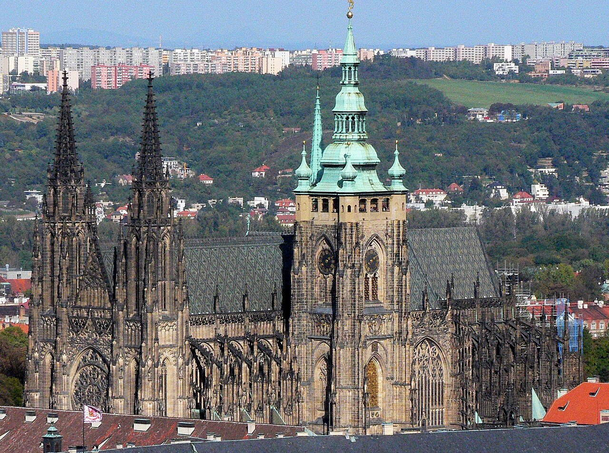
Церковь Святого Николая, Малая Страна
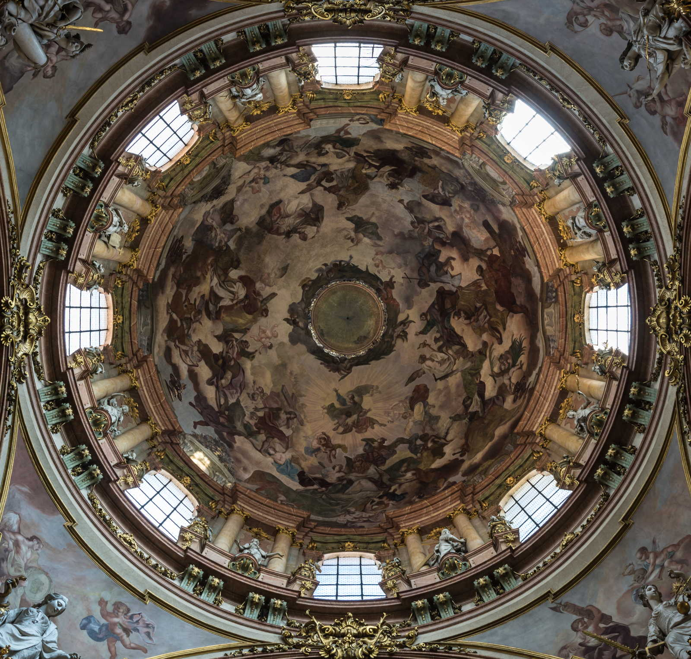
Расположенная на холме с видом на реку Влтава, церковь Святого Николая является одной из самых знаковых достопримечательностей Праги, величественно возвышаясь над живописным районом Малая Страна. Церковь была основана королем Вацлавом II в 1349 году. Он имеет характерную шпиль с замысловатыми резьбами и скульптурами. Внутри посетители могут увидеть барочные алтари и фрески известных художников. Его расположение предоставляет отличные возможности для фотографий благодаря своему высокому положению. Интерьер включает крипту, в которой находятся останки некоторых выдающихся личностей.
Построенная в позднеготическом стиле в начале XIV века, церковь Святого Николая изначально была возведена как францисканский монастырь и церковь. Со временем она претерпела несколько ремонтов, включая барочные изменения в XVIII веке, которые добавили роскошные интерьеры и декоративные фасады. Колокольня церкви предлагает панорамные виды на городской пейзаж, что делает её популярной смотровой площадкой для туристов. Посетители приезжают, чтобы восхититься его архитектурной красотой, историческим значением и захватывающими видами на реку и окружающие территории.
Кафедральный собор Святого Вита
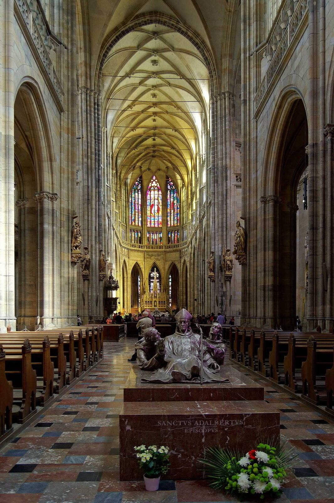
Сидя величественно на вершине Пражского града, собор Святого Вита является духовным сердцем Богемии и свидетельством готической архитектуры. Его высокие шпили устремляются к небу, предлагая панорамные виды на город внизу. Строительство началось в 1344 году во время правления короля Карла IV. Собор остается незавершенным по сей день, символизируя непостоянство жизни. Здесь находятся могилы чешских королей и королев, включая могилы Карла IV и его жены Анны Богемской. Его характерные две башни являются одними из самых узнаваемых достопримечательностей Праги. Здесь проходят регулярные службы, позволяя посетителям ощутить современное поклонение наряду с историческим благоговением.
Построенный в период с 1344 по 1929 год, собор Святого Вита претерпел множество реконструкций на протяжении веков. Изначально заказанный королем Карлом IV, он предназначался как королевский мавзолей для его семьи. Строительство собора несколько раз приостанавливалось из-за войн и финансовых трудностей, но каждый раз возобновлялось с новой преданностью. Сегодня его интерьер украшен великолепными витражами и сложной резьбой, которые отражают как средневековое мастерство, так и современные усилия по реставрации. Посетители приезжают сюда, чтобы восхититься его захватывающей архитектурой и оценить богатое историческое значение этого священного места.
Страхов монастырь
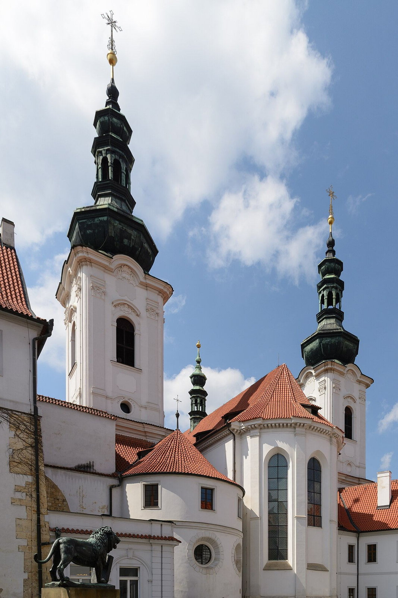
Сидя высоко на холме над Старым городом Праги, Страховский монастырь является одной из самых знаковых достопримечательностей города. Его внушительная барочная архитектура и потрясающие виды делают его обязательным для посещения для всех, кто исследует столицу. Монастырь был основан в 1622 году архиепископом Франтишем Бедржихом из Лобковиц. Он был спроектирован итальянским архитектором Джованни Антонио Де Россі. Королевская библиотека содержит более 200,000 томов, включая редкие иллюминированные манускрипты. Коллекция библиотеки включает произведения, датируемые IX веком. Монастырь непрерывно населён с момента его постройки.
Построенный в конце 17 века во время правления императора Леопольда I, Страховский монастырь изначально задумывался как бенедиктинский монастырь. Со временем он стал домом для Королевской библиотеки, в которой хранятся некоторые из самых редких книг и манускриптов Европы. Монастырь также включает две впечатляющие церкви: церковь святого Карла Борромео и меньшую церковь нашей Госпожи Здоровья. Посещение Страховского монастыря позволяет посетителям ощутить как религиозное наследие, так и культурные сокровища в одном месте.
Стромовка (Королевский охотничий заповедник)
Расположенный на окраине Праги, Стромовка — живописный парк, известный своей спокойной атмосферой и природной красотой. Основанный как королевский охотничий заповедник во времена правления императора Карла IV, он предлагает посетителям уникальное сочетание исторической значимости и современного отдыха. Парк занимает более 600 гектаров зелёных лесов и лугов. Здесь множество пешеходных троп, что делает его идеальным для пеших прогулок и велоспорта. Стромовка проводит различные культурные фестивали на протяжении всего года, демонстрируя традиционную чешскую музыку и выступления. Небольшое озеро в парке предоставляет возможности для катания на лодках и рыбалки. Парк также включает несколько исторических зданий, в том числе бывшую охотничью усадьбу.
Изначально основанный как королевская охотничья угодья императором Карлом IV в начале XIV века, Стромовка позже превратилась в рекреационную зону, открытую для публики. Со временем она стала популярным местом для прогулок, пикников и культурных мероприятий, отражая богатое наследие Праги и любовь к природе. Посетители приходят в Стромовку, чтобы насладиться её спокойной атмосферой, заняться активными видами отдыха и погрузиться в яркую культуру города.
Шато Троя
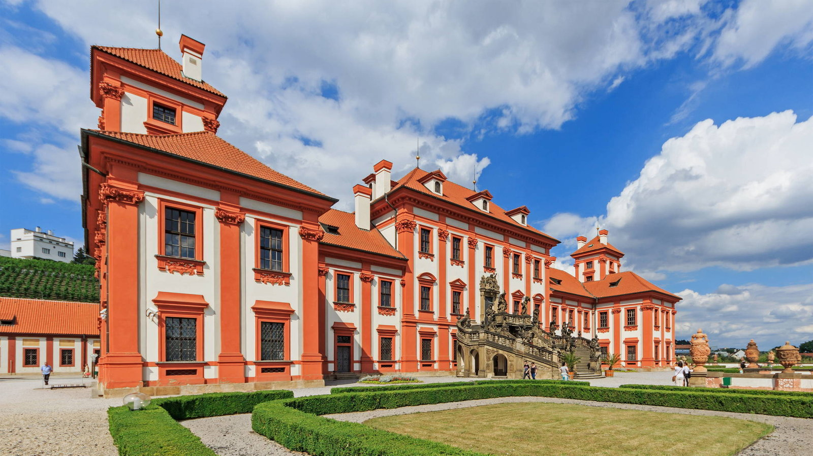
Высоко над Прагой расположено шато Троя, величественный барочный дворец, который возвышается над рекой Влтава и знаковым горизонтом Праги. Его элегантный фасад и захватывающие виды делают его одним из самых живописных мест города. Он отличается роскошными интерьерами с изысканными украшениями, характерными для эпохи барокко. Территория включает в себяFormal сады и парковые зоны, которые занимают несколько гектаров. Посетители могут наслаждаться экскурсиями, исследуя исторические залы и художественные коллекции. Его расположение на вершине холма предоставляет непревзойденные виды на Пражский замок и Старый город. Сегодня шато проводит культурные мероприятия, выставки и концерты.
Построенный в середине XVIII века архитектором Яном Блахой для графа Франтишека Антонина из Моравского Трбоми́ра, шато изначально предназначался как летняя резиденция. Позже он стал военным казармом во время Второй мировой войны, прежде чем быть восстановленным до своего прежнего величия в конце XX века. Шато предлагает потрясающие панорамные виды на Прагу и является свидетельством богатого архитектурного наследия города.
Vratislavský palác
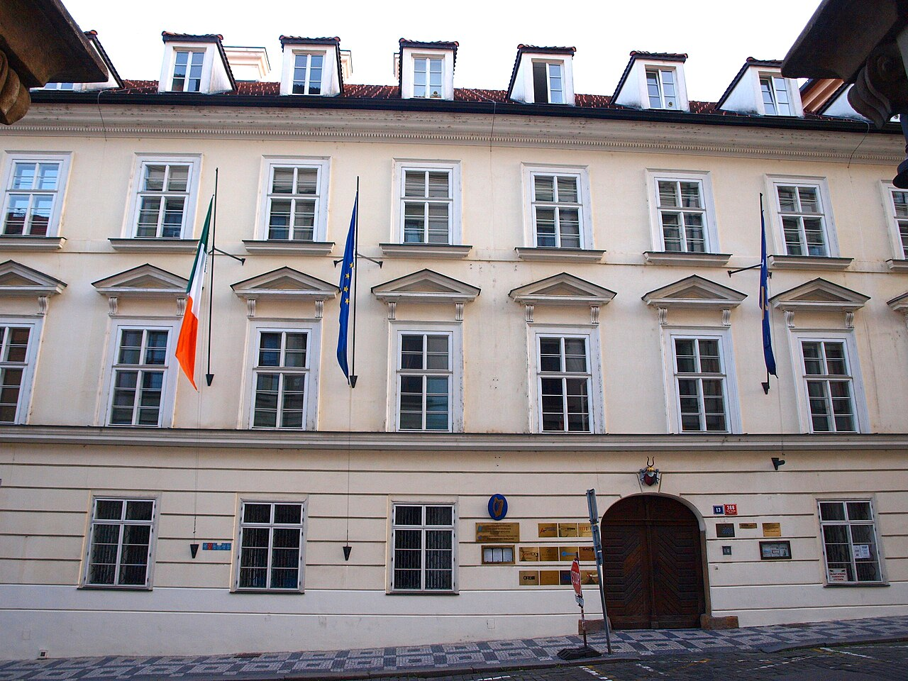
Кладбище Вышеград
Период: 1875
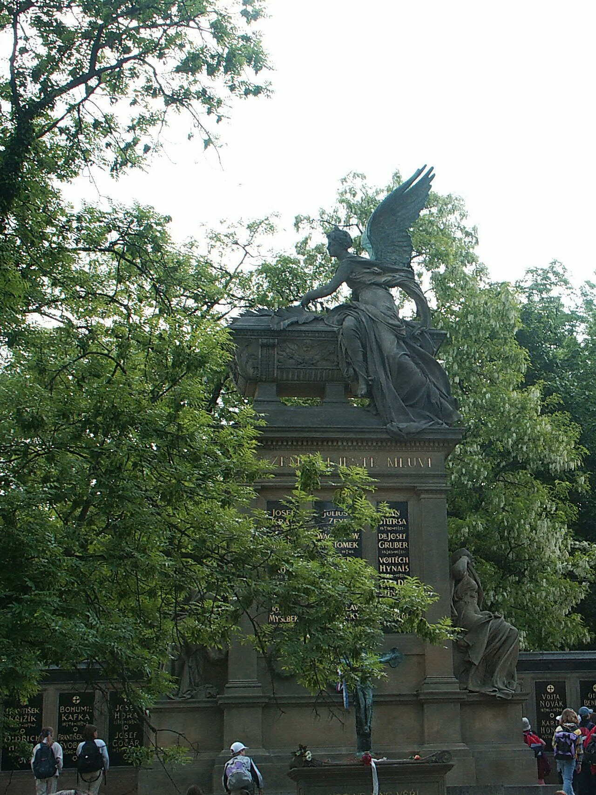
На высоком холме над рекой Влтава и историческим центром Праги расположено кладбище Вышеград, мирный оазис спокойствия среди шумного городского пейзажа. Основанное в конце 19 века, оно стало одним из самых известных мест захоронения чешских интеллектуалов, художников, писателей и политиков. Он занимает примерно 46 акров (18 гектаров) земли на холмистом месте. Кладбище включает в себя несколько мавзолеев и часовен с замысловатыми резьбами и скульптурами. Значимые могилы включают в себя захоронения выдающихся чешско-словацких лидеров и культурных икон. Его живописные виды предлагают панорамные перспективы на достопримечательности Праги, такие как Карлов мост и Староместская площадь. Посетители могут исследовать различные разделы, посвященные различным историческим периодам и художественным направлениям.
Основанное в 1875 году, кладбище Вышеград было спроектировано архитектором Йозефом Зитеком, чтобы воплотить романтические идеалы эпохи. Оно расположено на месте бывшей крепости Вышеградского замка, который когда-то служил стратегическим опорным пунктом, возвышающимся над рекой. Кладбище известно своим уникальным сочетанием неоготического, ар-нуво и классического стилей, демонстрируя некоторые из лучших примеров погребальной архитектуры в Европе. Посещение этого места позволяет гостям отдать дань уважения многим известным чешским деятелям, которые покоятся на его священной земле, включая авторов Карела Чапека и Божену Немцову, композитора Бедржиха Сметану и политика Томаша Масарика.
Сад Вальдштейна
Период: 1620–1624
Сад Валленштейна — это спокойный оазис тишины, расположенный в самом сердце Старого города Праги. Спроектированный итальянским архитектором Джованни Антонио де Россой и построенный в начале XVII века под патронажем Альбрехта фон Валленштейна, он сочетает в себе барочную элегантность и тщательное внимание к деталям. Построен в период с 1620 по 1624 год. Спроектировано итальянским архитектором Джованни Антонио де Россі. Особенности включают сложные фонтаны и скульптуры. Символизирует роскошь и влияние Альбрехта фон Валленштейна. Расположен рядом с Карловым мостом.
Заказанный Альбрехтом фон Валленштейном, могущественным военным лидером и государственным деятелем, сад был завершен около 1620 года. Он демонстрирует сложные фонтаны, статуи и тщательно подстриженные живые изгороди, расположенные в геометрических узорах, характерных для барочных садов. Сад служил как местом отдыха для своих покровителей, так и символом власти и богатства. Посетители приходят сюда, чтобы оценить изысканную красоту архитектуры и ландшафта сада, которые в значительной степени остались неизменными с момента его создания.
Вацлавская площадь
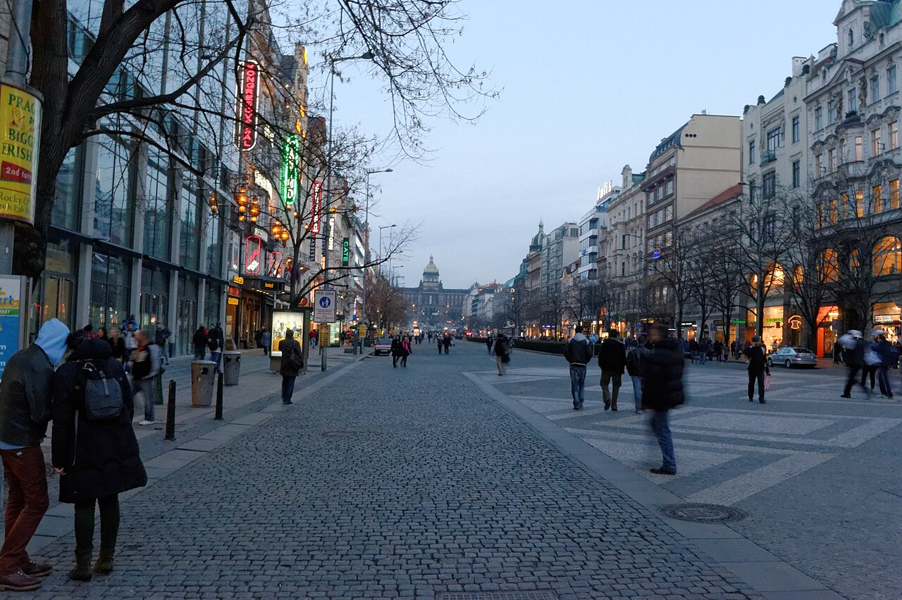
В сердце яркого центра Праги находится площадь Вацлава, шумный узел, который на протяжении веков был центральным элементом чешской истории и культуры. Площадь названа в честь святого Вацлава, который правил Богемией в 10 веке. Здесь проходят многочисленные фестивали и концерты в течение всего года, привлекая как местных жителей, так и туристов. Рядом находится Национальный мемориал жертвам коммунизма, посвященный тем, кто погиб под коммунистическим режимом. В последние годы город стал известен своей зоной, предназначенной только для пешеходов, что делает его идеальным местом для неспешных прогулок. Рядом с площадью расположены несколько известных ресторанов и кафе, предлагающих традиционную чешскую кухню.
Изначально построенная в конце 14 века как рынок, площадь Вацлава стала политическим и культурным центром во время Габсбургской империи. В начале 20 века она была переименована в честь святого Вацлава, покровителя Богемии. Площадь стала свидетелем значительных событий, таких как демонстрации против нацистской оккупации и антикоммунистические восстания в 1960-х и 1980-х годах. Обязательное место для посещения благодаря своей исторической значимости и живой атмосфере, площадь Вацлава также является домом для знаковых достопримечательностей, таких как Национальный музей и внушительная статуя короля Вацлава.
Телевизионная башня Жижков
Период: 1992
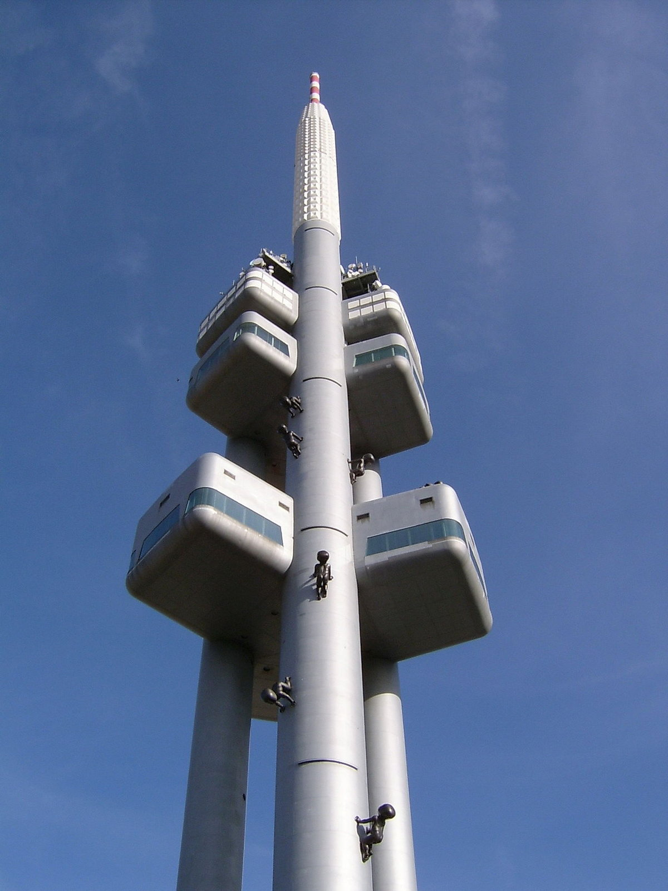
С доминирующим силуэтом на горизонте Праги с момента своего завершения в 1992 году, Телевизионная башня Жижков является современным чудом, которое считается одной из самых высоких конструкций Европы. Ее характерный дизайн и внушительное присутствие делают ее культовым символом чешской столицы. Высотой 160 метров, это вторая по высоте структура в Праге после Карлова моста. Башня располагает вращающимся рестораном, предлагающим панорамные обеды. Он служит как культурной достопримечательностью, так и функциональным центром вещания. Его необычный дизайн принес ему признание в качестве кандидата на статус объекта Всемирного наследия ЮНЕСКО. Открытый в переходный период после падения коммунизма, он символизирует надежду и прогресс.
Построенная в период с 1985 по 1992 год, телевизионная башня Жижков изначально предназначалась для обслуживания чешского телевидения. Спроектированная архитектором Яном Каплицким, она имеет уникальную форму, вдохновленную структурой молекул ДНК. Башня стала известна не только благодаря своей функциональности, но и благодаря своему яркому внешнему виду, который стал синонимом городской среды Праги. Посетители приходят сюда, чтобы насладиться захватывающими видами Праги, включая Староместскую площадь, Карлов мост и реку Влтаву, все это на фоне самой башни.